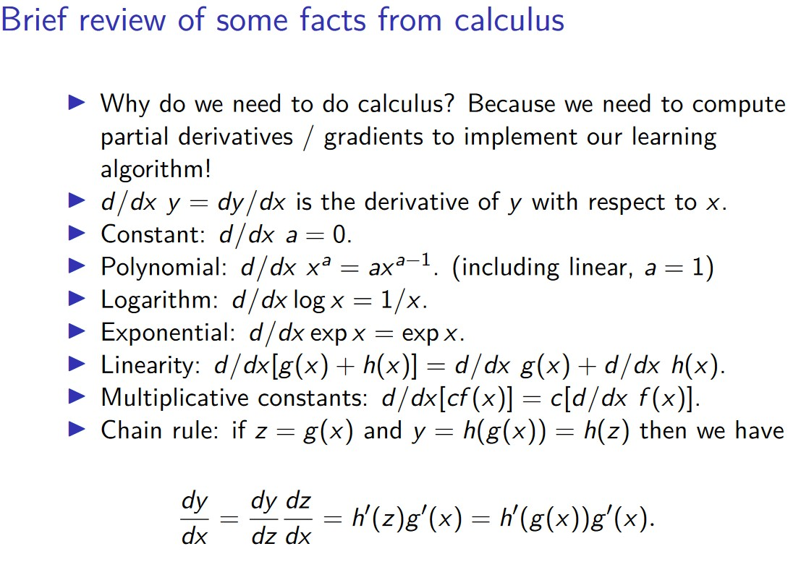

UdeS IFT603/712: Techniques d'Apprentissage, automne 2024
Création de cours : Pierre-Marc Jodoin,
modifications pour automne 2024 : Toby Dylan HOCKING.
Objectifs du cours
L’apprentissage automatique ou l’apprentissage par machine (Machine Learning) s'intéresse à la conception, l'analyse, l'implémentation et l’application de programmes capables de s’améliorer, au fil du temps, soit sur la base de leur propre expérience, soit à partir des données d'apprentissage. De nos jours, l’apprentissage automatique joue un rôle essentiel dans de nombreux domaines d’applications, tels que la vision par ordinateur, le traitement automatique du langage, la reconnaissance vocale, les systèmes tutoriels intelligents, la modélisation de l’usager, la robotique, la bio-informatique, les finances, le marketing, les jeux vidéos, la télédétection, etc. En fait, la plupart des programmes de l’intelligence artificielle contiennent un module d’apprentissage. Presque tous les systèmes de reconnaissances de formes sont basés sur des techniques d’apprentissage.
Manuel
Il est possible de réussir le cours sans acheter le manuel de référence. Cependant, il est recommandé d'en faire l'achat car le cours en est tiré. Bien que ce livre date de quelques années déjà, c'est une excellente référence pour comprendre les bases des techniques d'apprentissage.
Le livre de référence est Pattern
Recognition and Machine Learning de Christopher M. Bishop. Il est possible de le commander sur Amazon. Une copie est également à
la bibliothèque
des sciences et de génie.
Pour ceux et celles qui ne rechignent pas à l'idée de lire un livre sur un écran d'ordinateur, le manuel de Bishop est disponible en format pdf .
Un autre très bon manuel de référence est Mathematics for Machine Learning par Deisenroth, Faisal et Ong. Je recommande tout particulièrements les chapitres 2 à 6 pour ceux et celles qui souhaitent revoir les notions de base requisent pour ce cours en algèbre linéaire, probabilités et calcul différentiel et intégral. Ce manuel est également disponible gratuitement en ligne.
En français nous avons Introduction au Machine Learning par Chloé-Agathe Azencott.
Méthode pédagogique
La méthode pédagogique employée pour ce cours diffère de celles de la plus part des cours magistraux universitaires. En effet, à chaque semaine, vous serez invité à visionner de 60 à 90 minutes de vidéos en ligne. Il est important de visionner ces vidéos car elles couvrent environ 70% de la matière totale du cours. L'horaire des vidéo est donnée dans le tableau ci-bas.
Lors des séances magistrales en classe, je reverrai avec vous certains concepts mathématiques de base parfois oubliés (vous vous souvenez des probabilités conditionnelles?
des vecteurs propres? de la dérivée en chaîne?) ainsi que certaines preuves mathématiques en lien avec la matière vue dans les vidéos ainsi que des mise en contexte et des exercices pratiques et théoriques. Cette méthode pédagogique fait suite à de nombreux commentaires émis par les étudiants.es au fil des années. Cette approche pédagogique a donc pour objectif de vous aider!
Les séances magistrales devraient prendre une à deux heures par semaine. Vous serez également invités à poser des questions quant à la matière vue dans les vidéos. L'heure restante sera passée au laboratoire pour vous aider avec les travaux pratiques (autre requête formulées par les élèves des années antérieures).
Notes de cours et vidéos à visualiser à la maison
| Semaine |
Contenu |
Sections
du livre |
Semaine 0
(à faire par soi-même au besoin) |
Mise à niveau
• Tutoriel Python avec interface en ligne
• Tutoriel Python approfondi
• Tutoriel Python - Stanford
• Dérivées
• Dérivées partielles
• Algèbre linéaire (sections 2.1,2.2,2.3.1,2.3.4,4.2)
• Stats et prob de base (sections 6.1 à 6.5)
|
1.2.4, 2.1, 2.3, Apprendix C
|
| Semaine 1 |
0- Presentation [pdf]
[pdf]
1- Concepts fondamentaux [pdf]
[pdf]
[ipython notebook]
Evaluation/CV et plus proche voisins :
[Hocking CV pdf]
[Hocking CV simulations + sur-apprentissage pdf]
[Hocking nearest neighbors pdf]
[Resultats sur 19 jeux de données]
[zipUSPS]
[NSCH_autism]
[Quatre jeux de données, taux d'erreur et temps de calcul]
[Visualisation du test de Student (T-test)]
Interactives :
[polynome surapprentissage]
[polynome surapprentissage + plusieurs jeux de données]
[polynome surapprentissage + voisins]
[voisins surapprentissage]
[CV regression rpart vs featureless]
Présentation 0 (2:19)
Présentation 1 (20:27)
Concepts fondamentaux 0 (11:12)
Concepts fondamentaux 1 (18:33)
Concepts fondamentaux 2 (9:52)
Concepts fondamentaux 3 (8:19)
Concepts fondamentaux 4 (8:07)
|
1.0, 1.1, 1.3
|
| Semaine 2 |
2- Formulation probabiliste [pdf]
[pdf]
[ipython notebook]
Formulations probabilistes 0 (19:57)
Formulations probabilistes 1 (23:49)
Formulations probabilistes 2 (20:16)
Formulations probabilistes 3 (11:38)
|
1.2, 1.2.1, 1.2.2, 1.2.4, 1.2.5, 1.6, 1.6.1
|
| Semaine 3 |
3- Régression linéaire [pdf]
[pdf]
[Hocking regression pdf]
[ipython notebook]
Interactives de descent de gradient pour la régression :
[Ozone data]
[Simulated data]
[Ridge/L2 regularization]
Régression linéaire 0 (10:29)
Régression linéaire 1 (16:04)
Régression linéaire 2 (11:04)
Régression linéaire 3 (7:11)
Régression linéaire 4 (5:03)
Régression linéaire 5 (5:32)
|
3.1, 3.1.1, 3.1.4, 3.1.5, 3.2
|
| Semaine 4 |
4- Classification linéaire [pdf]
[pdf]
[ipython notebook]
[Rappels de dérivés :
 ]
de
[Hocking pdf]. Voir aussi Jacobian dans le livre de Goodfellow et al, Deep Learning : 4.3.1 Beyond the Gradient: Jacobian and Hessian Matrices, 6.5.2 Chain Rule of Calculus.
Interactive :
[Gradient descent for 2d simulated data, linear model and neural network]
Classification linéaire 0 (7:03)
Classification linéaire 1 (7:40)
Classification linéaire 2 (12:05)
Classification linéaire 3 (13:05)
Classification linéaire 4 (37:17)
|
4.1, 4.1.2, 4.1.3, 4.1.4, 4.2, 4.3,
|
| Semaine 5, 25-26 sept |
4- Classification linéaire [pdf]
[pdf]
[ipython notebook]
Classification linéaire 5 (39:01)
Classification linéaire 6 (6:01)
Classification linéaire 7 (12:01)
NOTE: le tp2 comporte une question en lien avec la notion de "Lagrangien". Bien que nous verrons cette notion en classe, vous pouvez visionner ces deux vidéos qui introduisent très bien cette notion et donnent quelques exemples d'application:
Lagrangien 1(9:56)
Lagrangien 2(31:55)
|
4.1, 4.1.2, 4.1.3, 4.1.4, 4.2, 4.3,
|
| Semaine 6, 2-3 oct |
5- Méthodes à noyau [pdf]
[pdf]
[ipython notebook]
Méthodes à noyau 0 (28:53)
Méthodes à noyau 1 (9:49)
Méthodes à noyau 2 (10:11)
|
6.1, 6.2
|
| Semaine 7, 9-10 oct |
6- SVM (Séparateur à Vaste Marge / Machines à vecteurs de support) [pdf]
[pdf]
Machines à vecteurs de support 0 (20:02)
Machines à vecteurs de support 1 (15:31)
Machines à vecteurs de support 2 (11:32)
|
7.0, 7.1, 7.1.1, 7.1.2
|
| Semaine 8, 16-17 oct |
Examen intra
17 oct, 8:30-10:20
D7-2021: IFT603 + IFT712 de Allam à El-Yazidi
D7-3021: IFT712 de Errafik à Zouhair
- vous avez droit d'une page de notes, recto verso, écrit à la main.
- Il peut y avoir des questions vraisemblables à mes examens précédants.
- Complexité asymptotique, d'entraînement et de prévision, pour modèle linéaire, et pour plus proche voisins
- Comment calculer les prévisions, d'un modèle linéaire / plus proche voisins ? (si vous avez un vecteur de données x=[2, 5] et un vecteur de poids w=[-1,2], etc)
- Validation croisée K fois, comment diviser les données ? Comment choisir le nombre de voisins ?
- Maximum de vraisemblance : nous avons étudié les distributions Gaussiennes/Bernoulli: Si vous changez de distribution, comment trouver la fonction de perte correspondant ?
|
|
| Semaine 9, 23-24 oct |
Semaine de lecture
|
|
| Semaine 10, 30-31 oct |
7- Réseaux de neurones multi-couches
[pdf]
[pdf]
[Hocking pdf neural networks]
[Hocking pdf convolutional]
Réseaux de neurones multi-couches 0 (8:02)
Réseaux de neurones multi-couches 1 (17:08)
Réseaux de neurones multi-couches 2 (12:40)
Réseaux de neurones multi-couches 3 (3:35)
Réseaux de neurones multi-couches 4 (13:46)
Réseaux de neurones multi-couches 5 (11:50)
|
5.1, 5.2, 5.2.1, 5.2.4, 5.3, 5.3.1, 5.3.2, 5.5
|
Semaine 11, 6-7 nov
Semaine 12, 13-14 nov |
7- Réseaux de neurones multi-couches
Réseaux de neurones multi-couches 6 (44:03)
Réseaux de neurones multi-couches 7 (12:53)
Réseaux de neurones multi-couches 8 (28:47)
|
5.1, 5.2, 5.2.1, 5.2.4, 5.3, 5.3.1, 5.3.2, 5.5
|
Semaine 13, 20-21 nov
Semaine 14, 27-28 nov
|
8- Combinaison de modèles [pdf]
[pdf]
[ipython notebook]
[Interactive : arbre de décision]
Combinaison de modèles 0 (13:08)
Combinaison de modèles 1 (21:50)
Combinaison de modèles 2 (11:47)
Combinaison de modèles 3 (2:30)
Combinaison de modèles 4 (21:12)
|
14.0, 14.2, 14.3, 14.3.1
|
| pas vu |
9- Théorie de la décision [pdf]
[pdf]
Théorie de la décision 0 (25:49)
Théorie de la décision 1 (16:29)
|
1.5.5, 3.2
|
| pas vu |
10- Mélange de gaussiennes [pdf]
[pdf]
[Hocking pdf]
Mélange de gaussiennes 0 (11:04)
Mélange de gaussiennes 1 (8:27)
Mélange de gaussiennes 2 (12:25)
Mélange de gaussiennes 3 (14:19)
|
9.2,9.4
|
| pas vu |
10- Mélange de gaussiennes
Mélange de gaussiennes 4 (11:13)
Mélange de gaussiennes 5 (13:53)
Mélange de gaussiennes 6 (14:13)
|
9.2,9.4
|
|
Semaine 15, 4 déc (pas de classe le 5 déc)
|
Révision pour examen final
|
|
Examen final, samedi 14 déc, 8h30-11h30, D3-2036,
2037, 2038.
|
Travaux Pratiques
Veuillez utiliser turninweb pour soumettre vos travaux. Tout retard ou erreur de remise entraînera une pénalité de 10% par jour et une note de 0 après 5 jours.
Veuillez également utiliser la plateforme de développement "gitlab" de l'Université. Pour ce faire, connectez-vous une première fois à depot.dinf.usherbrooke.ca et 12 heures plus tard vous pourrez commencer à travailler. Si vous ne pouvez créer de projet 12 heures après vous être connecté, envoyer un courriel à l'administrateur système Daniel-Junior Dubé afin qu'il aide.
Pour connaître vos partenaires d'équipes, veuillez consulter TurnIn.
NOTE IMPORTANTE 1 : En plus de votre code, veuillez soumettre un fichier "gitlab.txt" dans lequel vous donnez le lien vers votre dépôt sur le gitlab du département d'informatique.
A noter : pour aider nos correcteurs, veuillez remettre les fichiers de code directement en plus du fichier gitlab.txt SVP !
NOTE IMPORTANTE 2 : En plus de vos documents de travail, vous devez remplir, signer et joindre à votre travail le formulaire d'intégrité que voici : formulaire d'intégrité.
NOTE IMPORTANTE 3 : En plus de vos documents de travail, vous devez remplir et joindre à votre travail l'agenda d'équipe que voici : agenda d'équipe
NOTE IMPORTANTE 4 : veuillez bien utiliser git car une mauvaise utilisation pourra entraîner une perte de points aux TP3 et TP4 ainsi que pour le projet (ift712).
NOTE IMPORTANTE 5 : avant de commencer à travailler sur vos TP, veuillez svp prendre connaissance du document que voici : recommandatonsTP.pdf
Examens (exemples)(NOTE : l'examen final est récapitulatif)
| Intra1 | intra1.pdf |
| Intra2 | intra2.pdf |
| Final | final.pdf |
Exercises revision examen final. Presenter votre solution devant la classe pour gagner 5 points extra pour votre examen final.
1. La validation croisée est un algorithme utilisé dans
l'apprentissage automatique afin de quantifier l'erreur des
modèles appris sur des données.
a) En classe, nous avons discuté de deux types différents de divisions
de validation croisée : les divisions train/test et les divisions
subtrain/validation. Quel est le but de chaque type de division ?
b) Pour une division train/test, donnez le pseudo-code de l'algorithme
de validation croisée K-fold, en veillant à inclure les
entrées/sorties de l'algorithme, l'étape d'affectation aléatoire et le
calcul de l'erreur du test.
2. Paramètres du modèle et hyper-paramètres.
a) Dans un modèle linéaire avec régularisation à arrêt précoce,
considérez deux paramètres : le vecteur de poids et le nombre
d'itérations de descente de gradient. Lequel est un hyper-paramètre et
quel est le paramètre de modèle régulier ? Pourquoi ?
b) Dans un réseau neuronal profond, considérez quatre paramètres : les
fonctions d'activation spécifiques à la couche, les matrices de
pondération spécifiques à la couche, le nombre d'unités cachées par
couche et le nombre de couches. Quels sont les hyperparamètres et
quels sont les paramètres de modèle réguliers ? Pourquoi ?
3. Nombre de paramètres à apprendre. Supposons un réseau neuronal
profond avec 5 couches, y compris les couches d'ENTRÉE5 et de
sortie. Supposons une architecture de (entrée=100, 1000, 100, 10,
sortie=1) unités dans chaque couche. Supposons que la fonction de
prédiction pour chaque couche est f^l(h) = W^l h, où h est les unités
de la couche précédente et W^l est une matrice de pondération.
a) Combien de paramètres de pondération à valeur réelle y a-t-il dans W^1 ?
b) Combien de paramètres de pondération à valeur réelle y a-t-il dans W^2 ?
c) Combien de paramètres de pondération à valeur réelle y a-t-il dans W^3 ?
d) Combien de paramètres de pondération à valeur réelle y a-t-il dans W^4 ?
e) Combien de paramètres de pondération à valeur réelle faut-il
apprendre au total dans le réseau neuronal ?
4. Régularisation pour les réseaux neuronaux. De nombreux
hyperparamètres des réseaux neuronaux profonds que nous avons vus en
classe peuvent être interprétés comme des paramètres de
régularisation.
a) Donnez trois exemples d'hyperparamètres qui peuvent être
interprétés comme des paramètres de régularisation de réseaux
neuronaux profonds. Pour chaque paramètre, les valeurs de paramètre
GRANDES ou PETITES entraînent-elles un surapprentissage ?
b) Expliquez comment vous pourriez démontrer qu'un hyperparamètre a un
effet régularisant. Expliquez les calculs que vous effectueriez et la
visualisation/le tracé des données que vous créeriez.
5. Réseaux neuronaux convolutionnels.
a) L'opération de convolution peut être interprétée comme une
multiplication de matrices dense (pas de 0) ou creuse (avec 0) ?
b) Supposons que la couche A d'un réseau neuronal est entièrement
connectée et que la couche B est convolutionnelle. Si les deux couches
ont le même nombre d'unités cachées, laquelle a le plus de paramètres
à apprendre ? Pourquoi ?
Calculez manuellement le passage avant/arrière de l'algorithme de
rétropropagation (voir les exercices de calcul sur les diapositives).
6. Soit un réseau de neurones à K classes (ayant donc K neurones en
sortie) et la fonction softmax placée à la fin du réseau de
neurones. Expliquez pourquoi, lorsque le score pour un des neurones de
sortie est très élevé, la sortie du softmax possède parfois de
"‘NAN"’. Donnez une façon de se prémunir contre cet effet pervers.
7. Expliquez en quoi consiste la méthode de classification dites des
forêts aléatoires (random forests). Comment faire l'apprentissage, et
la prediction ?
|
| Sommaire
Professeur
Toby Dylan HOCKING
Correcteurs
Jeremi Lévesque
Antoine Théberge
Périodes de cours
Le mercredi de 10h30 à 11h20, D7-2023
Le jeudi de 10h30 à 12h20, D7-2023
Période de disponibilités
Du lundi au vendredi de 9h30 à 16h30
Horaire et plan de cours
(plan ift603-712)
|
{kind=link}
{kind=link}
{kind=link}
{kind=link}